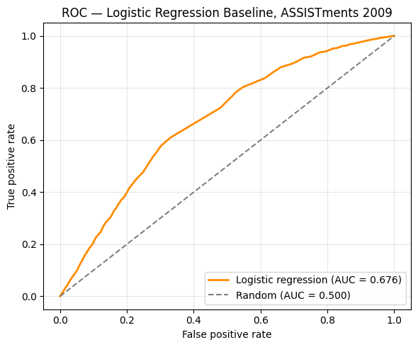

Abstract
A barrier in building adaptive learning systems is that "understanding" cannot be measured directly. So this project takes a different path: instead of measuring understanding, it predicts a measurable proxy for it - the probability that a student answers their next question correctly, given how they have performed so far. For each answer in the ASSISTments 2009-2010 Skill Builder dataset, the model used two pieces of the student's history on that skill: the number of previous attempts and the number answered correctly. The current attempt's outcome was omitted from the second feature so it could not leak the answer into the model. A logistic regression model reached a held-out ROC-AUC of 0.676 against a random baseline of 0.500. Using only these two features, the model conveyed a real but limited signal and provided a baseline for testing more complex knowledge-tracing models on the same dataset. Moreover, it is an early piece of something much bigger: software that could one day help personalize teaching for students across the globe.
Introduction
The motivation for this project was a question about learning: can a system tell whether a student actually understands something before they have fully shown it? If it can - even somewhat - then a learning platform can respond to a real signal instead of just guessing without responsiveness. Using real data, it could challenge the student who is ready and support the student who is having a hard time.
"Understanding" as a term is unclear, and it cannot be measured directly. So this project shrinks the impossibly large question into a smaller and more measurable one. The question was reframed to "Given this student's past answers, what is the probability that the next one is correct?" from "Does this student understand?" This is the established problem of knowledge tracing.1 Correctly predicting the next answer is a modest but honest piece of the much bigger goal of modeling understanding completely.
The simple model provides a baseline that more complex models should score better than, and every part of the prediction is interpretable. Its interpretability made its two features easier to examine and helped reveal problems such as data leakage, which occurred more than once during development. The final result is a reproducible baseline, and the problems that needed fixing were documented along the way.
Data
The data came from the ASSISTments 2009-2010 Skill Builder dataset, which contains records of middle-school students solving mathematics problems through an online tutoring platform.2 Each row identifies the student, the skill assigned to the problem, and whether the student answered correctly.
There was a key property of the file that needed special handling. Problems tagged with multiple skills are duplicated - the same interaction appears once per skill tag - and this meant the raw row count was overstating the number of distinct interactions. The raw file contained 525,534 rows across 30 columns, but this figure includes the multi-skill duplication and is not an accurate count of unique interactions. The number of distinct students, 4,217, is the more reliable indicator of the dataset's scale. This also meant the data had to be restructured before the true interactions could be counted. After deduplication on order_id, the unique interactions added up to 346,860 (duplication inflation: 1.52×).
Methods
Feature engineering
Duplicates were removed on order_id before feature computation.
The dataset did not include each student's number of previous attempts or previous correct answers; for each interaction, two features were computed from the student's prior response history on that specific skill: the count of prior attempts, and the count of those prior attempts that were correct. Interactions were grouped by (student, skill), and within each group a running count and running sum were taken in the log's existing order. The prior-attempt count begins at zero, so an attempt is never counted in its own history. The prior-correct count subtracts the current attempt's own outcome from the running sum:
past_correct_answers = cumulative_sum(correct) - current_correct
A cumulative sum includes the current row. If it was used directly, it would embed the current answer's correctness into that same answer's features, letting the model read part of the label from its input. Subtracting the current outcome leaves only prior information, and that keeps the results authentic.
Model
The classifier is logistic regression, which models the probability of a correct answer as the logistic (sigmoid) function of a weighted sum of the two features:
P(correct) = σ(w1·past_attempts_on_skill + w2·past_correct_answers + b)
The notebook names these features past_attempts_on_skill and past_correct_answers.
During training, the model learns a weight for each feature and an intercept. These values determine how prior attempts and prior correct answers affect the predicted probability. With the same data and settings, the training process is reproducible. This model uses the basic idea behind Performance Factors Analysis: predicting a student's next response from their previous performance on that skill.3
Evaluation
The rows were split 80/20 into training and held-out test sets with a fixed random seed of 2. The model trained only on the training section and was evaluated only on the untouched test section. Performance was measured with ROC-AUC - the probability that a randomly chosen correct attempt receives a higher predicted score than a randomly chosen incorrect one - where 0.5 is random and 1.0 is perfect. AUC was chosen over raw accuracy because the dataset's base rate (roughly two-thirds of attempts are correct) makes accuracy misleading: a model that always predicts "correct" scores roughly 66% accuracy while carrying no predictive skill at all, and AUC correctly grades that model at 0.5 (it cannot distinguish correct answers from incorrect ones).
Results
On the held-out test set, the model achieved a ROC-AUC of approximately 0.676 against the random baseline of 0.500. Raw accuracy was 0.6825, compared to 0.6612 for an "always predict correct" strategy - a small gap that shows exactly why AUC, instead of accuracy, was the primary metric. The learned weights were interpretable and made sense: prior correct answers carried a positive weight (more past success raises the predicted probability), while raw prior attempts carried a small negative weight (a high number of attempts weakly signals struggle). The intercept corresponded to a baseline of approximately 66%, matching the dataset's overall proportion of correct answers.

Two corrections during development
During development, two corrections were made, and each lowered a score that had looked better than it was:
| Configuration | Data | AUC | Interpretation |
|---|---|---|---|
| Synthetic sandbox | Generated | ~0.81 | Model reverse-engineered its own generating formula; no real signal |
| Raw real data | ASSISTments 2009 | ~0.74 | Inflated by multi-skill duplicate rows leaking across the split |
| Deduplicated real data | ASSISTments 2009 | ~0.676 | Honest held-out estimate |
| Random baseline | - | 0.500 | Chance |
The first configuration used synthetically generated data; its high score came from the model recovering the formula that produced the data, not from any real learning pattern. The second used real data but computed features before the multi-skill duplication was handled, so duplicated copies of single interactions were split across training and test sets - a form of leakage that inflated the score. After deduplicating on the interaction identifier, the AUC settled at approximately 0.676. A score that lowers after leakage is removed is a more accurate estimate of the model's true performance - not a worse result.
Discussion
This research found that two simple, interpretable features - how much a student has practiced a skill and how well they have done so far - predict the next answer meaningfully better than chance but far from perfectly. An AUC near 0.676, well below 1.0, shows how much these two features cannot capture about a student.
Students with identical recorded histories still produce different outcomes: they get tired, they guess, they slip on material they know, or they figure something out the moment before answering. None of that fits inside two running counts. Overall, this research demonstrates that predicting next-answer correctness is a small but meaningful step toward modeling understanding.
Limitations
This is a baseline and carries the limitations of one:
- Evaluation scope. The test set contained new responses from students who also appeared in the training data.
- Single split. The reported AUC comes from one split, so variation across splits was not measured.
- Assumed chronological order. The features were calculated using the dataset's existing row order because no timestamp was used for sorting. If the rows were not chronological, some "prior" attempts may not represent the student's actual history.
- Two features. Factors that are not modeled include question difficulty, response time, and the possibility of forgetting between attempts.
- Multi-skill simplification. The deduplication kept one skill tag per problem and discarded the rest.
References
[1] Corbett, A. T.; Anderson, J. R. Knowledge Tracing: Modeling the Acquisition of Procedural Knowledge. User Modeling and User-Adapted Interaction 1994, 4 (4), 253-278.
[2] Feng, M.; Heffernan, N.; Koedinger, K. Addressing the Assessment Challenge with an Online System That Tutors as It Assesses. User Modeling and User-Adapted Interaction 2009, 19 (3), 243-266.
[3] Pavlik, P. I.; Cen, H.; Koedinger, K. R. Performance Factors Analysis - A New Alternative to Knowledge Tracing. Proceedings of the 14th International Conference on Artificial Intelligence in Education 2009, 531-538.